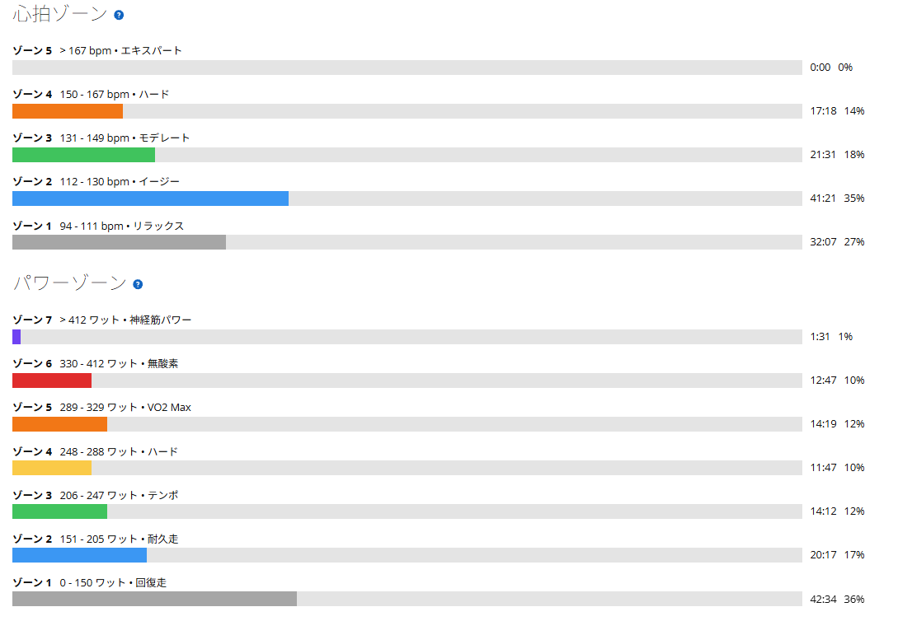
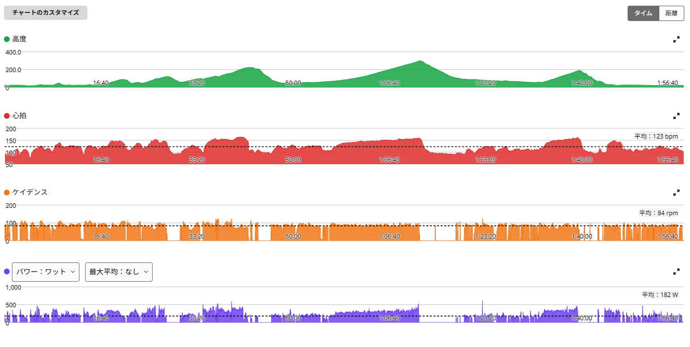

古峰ヶ原前日。太平山反時計回りでしっかりON
明日は古峰ヶ原。その前日だが、今日はいつもの太平山反時計回りを走ってきた。ここ数日で疲れを抜いていたので、走り出しから体が軽かった。明日があるので完全に出し切るつもりではなかったものの、各登りでは自然とそれなりに踏めてしまった。結果としては、しっかりしたON日である。前日に何をやっているのか。

約52km・NP247W・TSS157
- 全体51.67km / 1時間57分36秒 / 獲得787m / 平均気温22.1℃
- 負荷平均182W / NP247W / IF0.897 / TSS156.9
- 心拍・回転平均123bpm / 最大164bpm / 平均84rpm
数値だけ見ても、今日は軽い日ではない。

太平山は7分切り。これで3回目
- 太平山6分57秒 / 330W / 心拍平均150bpm・最大164bpm / 89rpm
太平山は7分を少し切って330W。7分切りは10月8日、10月15日に続いて3回目になった。前日でもここは普通に踏めた。最近は太平山で7分前後が、少しずつ特別ではなくなってきている。……と書くと強くなった人みたいだが、まだ3回である。
琴平峠も300W超え。唐沢山は流れの中で
- 琴平峠14分26秒 / 301W / 心拍平均147bpm・最大159bpm / 87rpm
- 唐沢山5分49秒 / 329W / 心拍平均150bpm・最大162bpm / 80rpm
琴平峠は約14分半・301W。今日のテーマは「全部で出し切る」ではなかったが、結果として300Wは超えた。このくらいの持続出力を、いつものルートの後半で出せているのは悪くない。
最後の唐沢山もしっかり5分台・329W。「最後に約5分、出し切る」という形には近いが、今日は明日があるので完全な全力ではなく、流れの中で終える感じだった。
過去の反時計回りと並べてみる
- 10月15日太平山 6分59秒・332W / 琴平 14分17秒・314W / 唐沢 5分29秒・359W / NP253W
- 今日太平山 6分57秒・330W / 琴平 14分26秒・301W / 唐沢 5分49秒・329W / NP247W
太平山は10月8日・10月15日と同じ水準で、パワーも一番良かった10月15日とほぼ並んでいる。一方で、琴平峠と唐沢山は10月15日ほどではない。それでも琴平峠は10月12日（297W）より上だった。NPは10月12日と同じ247Wだった。登り1本の出来は保ちつつ、後半は少し抑えた日、という整理がしっくりくる。
パワーゾーンを見ると、ゾーン5が約14分、ゾーン6が約13分、ゾーン7が1分半ほど。ひとつの登りだけ頑張ったというより、太平山、琴平峠、唐沢山とルート全体で何度も強度が上がった結果である。ただ、10月15日のゾーン6は約19分あったので、今日はそこまでは使っていない。
今日はこれ以上何も足さない
今日の太平山反時計回りは、前日という意味ではかなり重めだった。それでも、体が軽かった分、いつものルートの中で今の状態を確認できた一日だった。完全フレッシュではないが、最近はこういう状態でもある程度走れるようになってきた。明日は朝9時スタート予定。今日はこれ以上何も足さず、そのまま明日に繋げる。